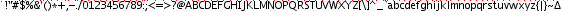
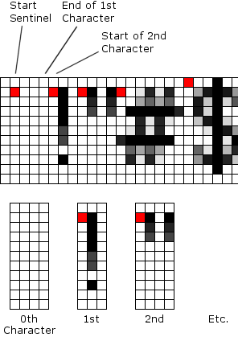
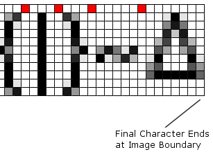
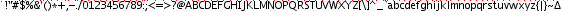
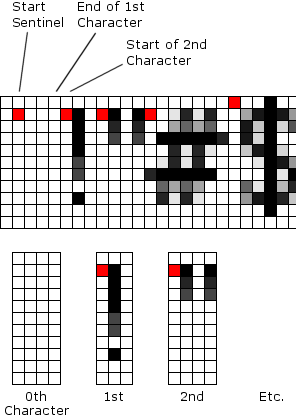
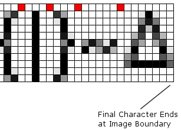

A 2 to 17-color image, containing all the desired glyphs, each with a fiducial marking its width. An example, Lucidia Sans 10pt, characters 32 to 127:



The left edge of the image is discarded, up to the first fiducial, which marks the zeroth column of the zeroth character. The next fiducial marks the zeroth column of the next character, and so on. Image height is taken as character height, uniform for the whole font. Make sure to crop the image so that no ascenders or descenders are accidentally cut off—few letters use the full box, check carefully!
The fiducial is always #ff0000 (red). It is translated to white (#ffffff). The vertical position of the fiducial doesn't matter, nor the number of pixels in the column colored that way. (TODO: make some way to encode grayscale under the fiducial?) All other colors: the average ((R + G + B) / 3) is used. Alpha is not used. Output is up to 16 shades of grayscale.
Output File Format
TBD
Options, Notes
Text format: Includes statistics on font metrics, encoding efficiency (compression), etc.
C header format: Header contents are #defined. All BYTEs are uint8_t, WORDs are uint16_t, etc.
Only the header is given above; the accompanying C code to use it is as follows (as an avr-gcc ROM declaration):
#include "Header_Name.h"
#ifdef HEADER_NAME_H_INCLUDED
// Place this at the top, or in the common header file:
const uint8_t ImageData[HEADER_NAME_TOTAL_LEN];
// Reference this with: drawImage(ImageData, x, y);
const uint8_t ImageData[] PROGMEM = {
(HEADER_NAME_PALETTE_LEN & 0x00ff),
HEADER_NAME_PAL,
HEADER_NAME_CMDS
};
#endif // HEADER_NAME_H_INCLUDED
Execution speed: Graphics writes tend to dominate, particularly via serial (SPI or other). For display controllers with a set-draw-window command having single pixel resolution, whole characters can be drawn at a time, without too much overhead (one window command per character). If the window can be filled in vertical columns, one window command for a whole line of characters may even do. If pixels can only be written row-wise, then characters also must be drawn a row at a time, and the font has to be encoded by rows rather than blocks.
Input File Format
A 2 to 17-color image, containing all the desired glyphs, each with a fiducial marking its width. An example, Lucidia Sans 10pt, characters 32 to 127:

 
The left edge of the image is discarded, up to the first fiducial, which marks the zeroth column of the zeroth character. The next fiducial marks the zeroth column of the next character, and so on. Image height is taken as character height, uniform for the whole font. Make sure to crop the image so that no ascenders or descenders are accidentally cut off—few letters use the full box, check carefully!
The fiducial is always #ff0000 (red). It is translated to white (#ffffff). The vertical position of the fiducial doesn't matter, nor the number of pixels in the column colored that way. (TODO: make some way to encode grayscale under the fiducial?) All other colors: the average ((R + G + B) / 3) is used. Alpha is not used. Output is up to 16 shades of grayscale.
Output File Format
Options, Notes
Text format: Includes statistics on font metrics, encoding efficiency (compression), etc.
C header format: Header contents are #defined. All BYTEs are uint8_t, WORDs are uint16_t, etc.
Only the header is given above; the accompanying C code to use it is as follows (as an avr-gcc ROM declaration):
#include "Header_Name.h" #ifdef HEADER_NAME_H_INCLUDED // Place this at the top, or in the common header file: const uint8_t ImageData[HEADER_NAME_TOTAL_LEN]; // Reference this with: drawImage(ImageData, x, y); const uint8_t ImageData[] PROGMEM = { (HEADER_NAME_PALETTE_LEN & 0x00ff), HEADER_NAME_PAL, HEADER_NAME_CMDS }; #endif // HEADER_NAME_H_INCLUDEDExecution speed: Graphics writes tend to dominate, particularly via serial (SPI or other). For display controllers with a set-draw-window command having single pixel resolution, whole characters can be drawn at a time, without too much overhead (one window command per character). If the window can be filled in vertical columns, one window command for a whole line of characters may even do. If pixels can only be written row-wise, then characters also must be drawn a row at a time, and the font has to be encoded by rows rather than blocks.
Compression/Encoding: .
Future Improvements, Speculation
Foo?